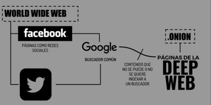

La Deep Web es una parte de la red que contiene información material y páginas web que no están indexadas en los buscadores comunes como google, bing, etc. Estas páginas y documentos están hechos de forma para que no pueden ser indexables, ya sea porque están protegidos con contraseña o porque están hechos en formatos no indexables.

Principalmente la Deep Web era utilizada por los sistemas de gobierno
para alojar bases de datos en grandes cantidades. En el año 2000 se
estimaba que la tenía un tamaño de 7500 Terabytes lo era un tamaño 45
veces superior a la internet superficial.
En la Deep Web podemos encontrar contenido almacenado por los gobiernos
de distintos países. Algunas organizaciones como la NASA también
almacenan información sobre sus investigaciones científicas que realiza.
Otro tipo de información que se almacena es de tipo meteorológica,
datos financieros, etc.